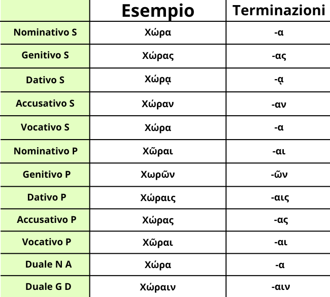

La declinazione per Alfa Puro femminile è la prima declinazione che si impara nel Greco Antico. È infatti la più facile e già con essa si ha una grande varietà di sostantivi.
Si dice che un sostantivo è in Alfa Puro quando la desinenza è preceduta o da ε o da ι o da ρ.
In ordine da Nominativo a Vocativo, da Singolare a Duale è: -α, -ας, -ᾳ, -αν, -α, -ᾱι, -ῶν -αις, -ας, -αι, -α. -αιν.
Noterai forse qualche cosa particolare: L'α da sola si presenta sia al nominativo che al vocativo, questo perché sono casi diretti. L'ῶν la si trova sempre così in qualsiasi genitivo plurale della prima declinazione.